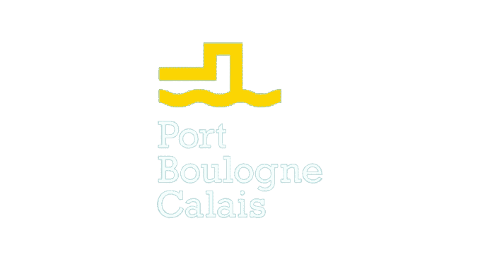

On April 25, 2017, the Port Boulogne Calais announced a recovery in freight traffic in the first quarter of 2017 which enabled the Port of Calais to achieve the best quarter in his history with an absolute record for the month of March during which 181,005 freight units used the Calais port facilities. The number of heavy goods vehicles transiting through the Port of Calais rose by 11.2% compared with the first quarter of 2016, with 507,851 trucks passing through. Cross-Channel freight traffic was around 42,996,737 tonnes of freight in 2016 11. This makes Port Boulogne Calais the leading French port for roll-on/roll-off traffic (goods traffic excluding containers), after Marseille, Le Havre and Dunkirk.
This site is published by the Web Crafters company.
LEPALLEC Hippolyte, project manager, team management. DENIS Corentin, CHAMPY Thomas, graphic designers, creation of logos, personas, wireframes, mock-ups, etc...
Ugo CAVEL, Head of Communications of the WebCrafters Group.
Actimage Consulting SAS 19 Rue Louis David 62100 Calais
The WebCrafters company is committed to ensuring that the collection and processing of your data, complies with the General Data Protection Regulation (RGPD) and the French Data Protection Act (Loi Informatique et Libertés).
Unless explicitly stated otherwise, the contents of this site are offered under the Etalab 2.0 open license (PDF - 233 kb). You are free to reproduce, copy, modify, extract, transform, communicate, disseminate, redistribute, publish, transmit and exploit them, provided that you mention their source and date of last update, and that you do not mislead third parties as to the information contained therein. This authorization to set up a link is valid for any medium, with the exception of those disseminating information of a polemical, pornographic or xenophobic nature, or which may, to a greater extent, offend the sensibilities of a large number of people.
×